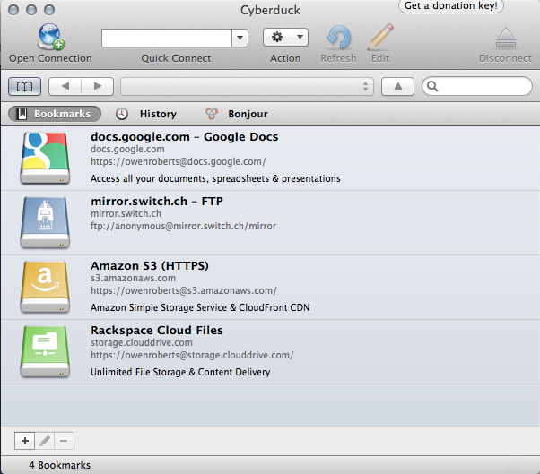
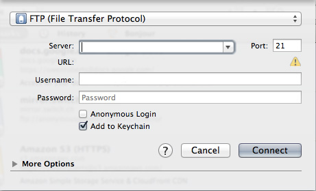

Assignment: Recreate a work as HTML
For our first assignment, take a work, either a short story, a poem, a piece of art, an article, a song, anything that you like, and recreate it as an HTML page. Be creative. It doesn't have to be perfect, just an interesting adaptation. Use the HTML tags we learned in class today, with images, text and links.
Some examples:
If you can't think of a story you would like to use, use this one by Ray Bradbury.
Your assignment should include:
- Drawings of site overview
- HTML for pages, links to pages
- Add at least one image to each page
- Link to one or more page outside of site
- Add one or more meta tags
- Validate pages
We will show these website at the beginning of class next week.
Reading
Weaving the Web by Tim Berners-Lee
This is an excerpt of two chapters from Tim Berners-Lee's memoir about creating the World Wide Web. It is a bit technical, but we should have mentioned most of the terms in the first class. It describes his efforts to create standardized protocols for Hypertext and the Internet. It's an interesting bit of history and a fairly readable excerpt.
Super quick FTP instructions
This page explains how to setup up your student server. It is kind of complicated, so I would start here and only look there if its not working.
First thing, download Cyberduck.
When you open Cyberduck it will look like this.
Click "Open Connection".
A window will appear. It should be set to FTP (File Transfer Protocol). If not, change it using the first dropdown.
In the server input, write:
beauty.tcnj.eduUsername is your tcnj username. Mine is "robertso".
Password is your email password. Mine is justkidding12.
Hit "Connect".
You should see your root server folder! (If you don't, send me an email.)
Create a folder called "www". This is your public directory. Anything that you put in here will be publicly available to anyone with an Internet connection. Anything not in here will not be publicly viewable.
Create an index.html page for this directory. It could be a splash page with links to homework assignments, or anything you want to display. Once you have an index page, you can view it by going to
tcnj.edu/~[yourusername]in any browser. (Replace [yourusername] with your user name, meaning no brackets, just the characters in your username, to be very clear.)
For this week's homework, you will create a folder called "week1" or something else descriptive of your project, and put all of your files in there. This becomes the "root" folder for you project for this week. When I go to the URL
tcnj.edu/~[yourusername]/week1/I will find your homework. I know this might be confusing at first. Don't worry, you are not being graded on your ability to complete this tutorial. You will become very familiar with FTP as the class progresses.
When you are finished, your server should looks something like this: